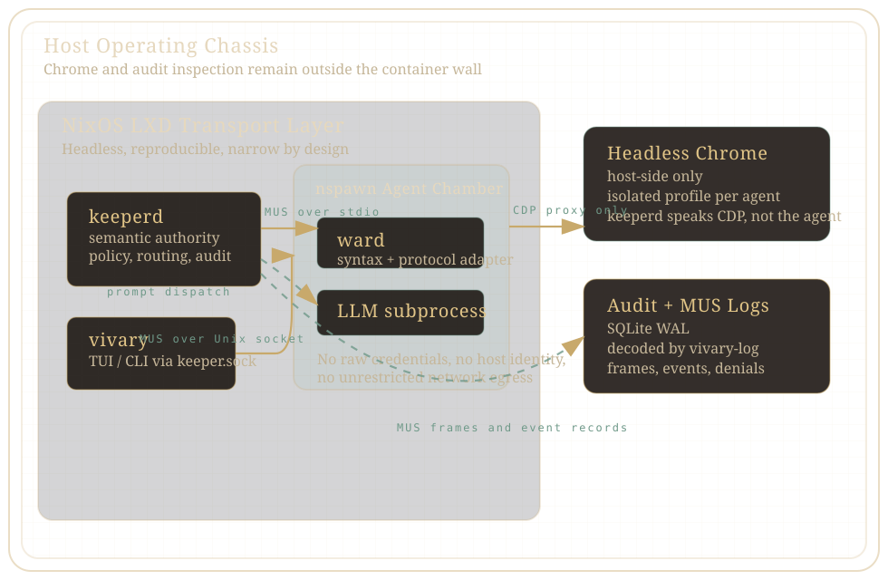

Containment before cleverness
Each agent runs inside a narrow chamber with limited filesystem reach, a firewalled egress path, and no direct claim on host identity.
Memorial Edition for the Governance of Artificial Persons
VIVARY treats agent execution as an operating apparatus: warded chambers, explicit powers, auditable signal traffic, and an operator who remains sovereign over the machine.
Virtualized Isolated Verifiable Agent Runtime Yard
Operating Principles
Each agent runs inside a narrow chamber with limited filesystem reach, a firewalled egress path, and no direct claim on host identity.
keeperd decides what a request means, whether it is permitted, and how it is recorded. The Ward does not become a second policy court.
Agents do not receive raw credentials or ambient powers. They receive named capabilities with scopes, denials, and operator-legible contracts.
MUS-framed traffic and structured events are preserved for later inspection. Debugging is part of the machine, not an afterthought.
Containment Apparatus

The semantic court of the machine. It stamps identity, enforces policy, resolves credentials, writes the audit record, and mediates all external force.
The local interpreter at the chamber edge. It turns backend-specific tool syntax into MUS requests, rejects malformed calls, and reports session facts.
The human still has a console worthy of the system: live state, prompt dispatch, event traces, and a CLI-first path into the logs.
Instrument Register
Notably Excluded